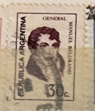
| SOURCE | TITLE| IMAGE MATCH | click to source page |
| eBay | ARGENTINA 1032 - Manuel Belgrano "1974 Brown Violet" (pf22033) | eBay | 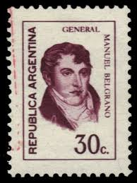 |
| eBay | ARGENTINA 931 - Manuel Belgrano "1973 Ordinary Paper" (pf21928) | eBay | 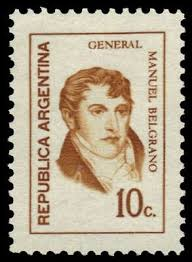 |
| Colnect | Briefmarke: General Manuel Belgrano (1770-1820) (Argentinien(Generals - Fluo) Mi:AR 1174,Sn:AR 1032,Yt:AR 972,Sg:AR 1310,Gz :AR 1169A,Göt:AR 1626 📮 | 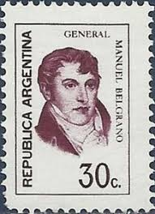 |
| vividagallery.com | Argentina General Manuel Belgrano 30 Centavos Crimson Portrait Independence Hero Postage Stamp Weekender Tote Bag by Vivida Gallery - Vivida Gallery | 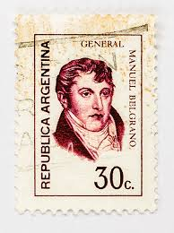 |
| eBay | ARGENTINA 927p - Manuel Belgrano "1972 Fluorescent" (pf21927) | eBay Australia | 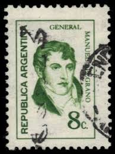 |
| sellosmundo.com | Manuel Belgrano 1770 - 1820. Economist, journalist, politician, lawyer and military man.. Argentina America ref. 178534 | 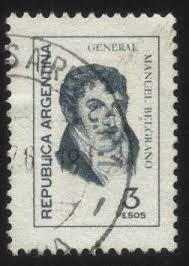 |
| Todocolección | 1980 - argentina - dia del periodista - gazeta - Buy Antique stamps of Argentina on todocoleccion | 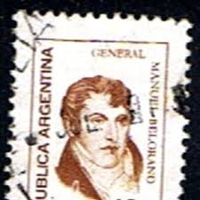 |
| Todocolección | argentina 1 c. narciso laprida año 1916. - Buy Antique stamps of Argentina on todocoleccion | 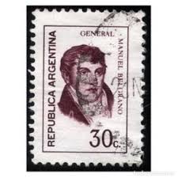 |
| HipStamp | Browse Listings in Central & South America / HipStamp | 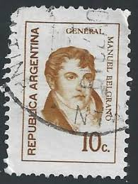 |
| Colnect | Stamp: General Manuel Belgrano (1770-1820) (Argentina(Generals - Fluo) Mi:AR 1065,Sn:AR 926,Yt:AR 866,Sg:AR 1303,Gz :AR 1064,Göt:AR 1524 📮 | 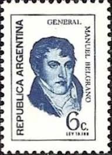 |
| eBay | ARGENTINA 1089 - Manuel Belgrano (pf22084) | eBay | 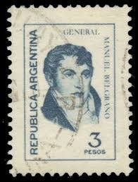 |
| Alamy | ARGENTINA - CIRCA 1974: a stamp printed in the Argentina shows Lama, Painting by Juan Batlle Planas, circa 1974 Stock Photo - Alamy | 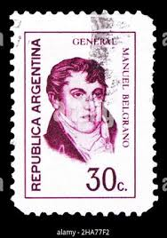 |
| ebid.net | General Manuel Belgrano on eBid United States | 203297382 | 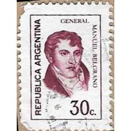 |
| Stamp Auction Network | Philatino - Guillermo Jalil Sale - 2231 Page 6 | 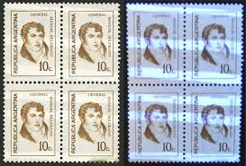 |
| Todocolección | argentina 1974 día del ejército. usado - used. - Buy Antique stamps of Argentina on todocoleccion | 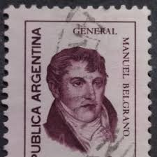 |
| Alamy | ARGENTINA - CIRCA 1970: stamp printed by Argentina, shows Manuel Belgrano, economist, lawyer, politician, and military leader, circa 1970 Stock Photo - Alamy | 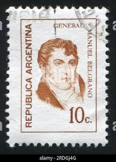 |
| Todocolección | sello usado argentina simón bolívar 700 pesos - Buy Antique stamps of Argentina on todocoleccion | 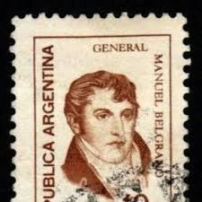 |
| kitantik | ARJANTİN EKONOMİST MANUEL BELGRANO 1972 - DAMGALI - Efemera - kitantik | #24592601000223 | 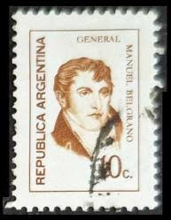 |
| Mercado Libre | Argentina 972 G 1626 Variedad Doble Impresión Joya! | MercadoLibre | 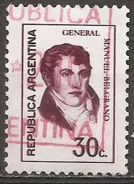 |
| Todocolección | sello usado argentina general manuel belgrano 3 - Acheter Timbres anciens d'Argentine sur todocoleccion | 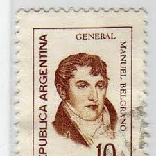 |
| Mercado Libre | 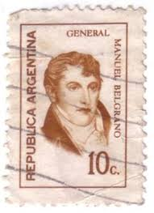 | |
| Dreamstime.com | Manuel Belgrano editorial photography. Image of face - 98782447 | 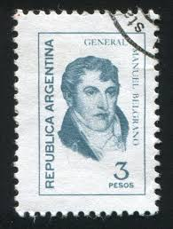 |
| Dreamstime.com | Belgrano Portrait Stock Photos - Free & Royalty-Free Stock Photos from Dreamstime | 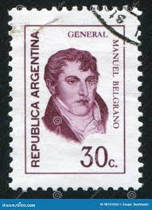 |
| Alamy | Manuel belgrano hi-res stock photography and images - Alamy | 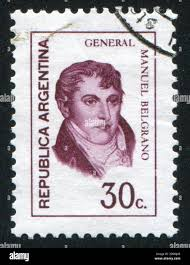 |
| Todocolección | sello postal argentina 1892 , 1 centavo, bernar - Acheter Timbres anciens d'Argentine sur todocoleccion | 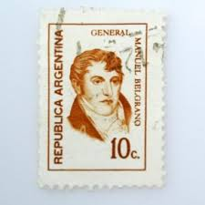 |
| Dreamstime.com | A Man - a Lawyer, Politician, Businessman or Official Speaks, Leaning His Hands on a Podium or Pulpit. Official Statement Stock Photo - Image of election, communiquacopy: 244573972 | 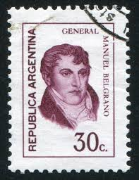 |
| Todocolección | argentina 2 c. jose de san martín año 1908. - Buy Antique stamps of Argentina on todocoleccion | 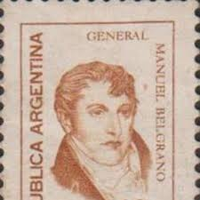 |
| Mercado Libre | Argentina Manuel Belgrano 1058/a Gj 1743/a Fluor Tiza + Mate | MercadoLibre | 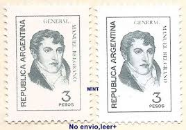 |
| eBay | ARGENTINA 927 - Manuel Belgrano "1972 Ordinary Paper" (pf31657) | eBay | 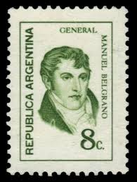 |
| vividagallery.com | Argentina General Manuel Belgrano 10 Centavos Brown Patriotic Portrait Definitive Postage Stamp Greeting Card by Vivida Gallery | 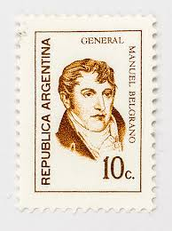 |
| Alamy | Manuel belgrano hi-res stock photography and images - Alamy | 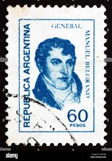 |
| Alamy | Manuel Belgrano (1770-1820). Argentine personality involved in the war for independance. Comentarios de los hechos del Señor Alarcon, Marqu. Madrid, 1665. Manuel Belgrano (1770-1820). Intellectual, lawyer, politician and Argentine military man. Fighter | 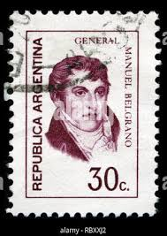 |
| vividagallery.com | Argentina General Manuel Belgrano 10 Centavos Brown Patriotic Portrait Definitive Postage Stamp Adult Pull-Over Hoodie by Vivida Gallery - Vivida Gallery | 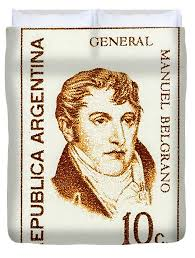 |
| HipStamp | Argentina De San Martin brown 25c (AP132022) | Central & South America - Argentina, Stamp / HipStamp | 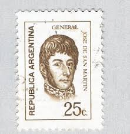 |
| Todocolección | s-00733- argentina. catamarca. cuesta de zapata - Kaufen Alte Briefmarken von Argentinien in todocoleccion | 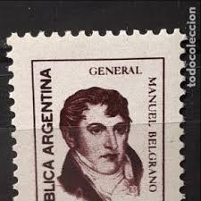 |
| Todocolección | argentina, 1978* capilla de candonga - Buy Antique stamps of Argentina on todocoleccion | 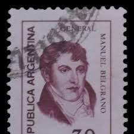 |
| eBay | ARGENTINA 1099 - Manuel Belgrano (pf22092) | eBay | 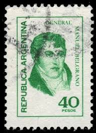 |
| vividagallery.com | Argentina General Manuel Belgrano 30 Centavos Crimson Portrait Independence Hero Postage Stamp Coffee Mug by Vivida Gallery - Vivida Gallery | 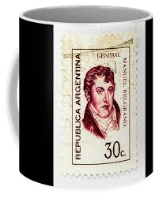 |
| Todocolección | 31 sellos antiguos de argentina variados - Buy Antique stamps of Argentina on todocoleccion | 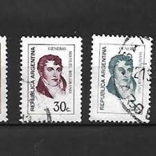 |
| Todocolección | argentina. 1899. alegoria de la libertad - Buy Antique stamps of Argentina on todocoleccion | 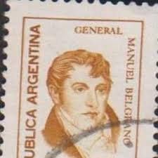 |
| Dreamstime.com | Portrait of Jose Burgos 1837-1872 Priest and Philosopher, Personalities Serie, Circa 1955 Editorial Photography - Image of closeup, estampilla: 102027062 | 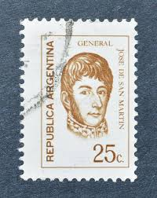 |
| eBay | ARGENTINA 934 - Jose de San Martin "1973 Carmine Red" (pf21930) | eBay | 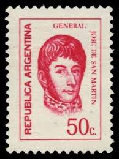 |
| Todocolección | 1970 argentina. general manuel belgrano - Buy Antique stamps of Argentina on todocoleccion | 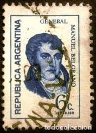 |
| Todocolección | sello usado argentina trigo - Compra venta en todocoleccion | 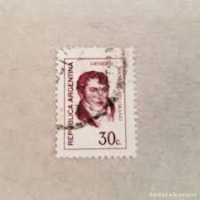 |
| Shutterstock | 6+ Thousand 1960 Stamp Royalty-Free Images, Stock Photos & Pictures | Shutterstock |  |
| vividagallery.com | Argentina Jose San Martin 120 Pesos Red Orange Republic Symbolism Portrait Postage Stamp Art Print by Vivida Gallery - Vivida Gallery | 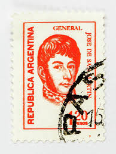 |
| vividagallery.com | Argentina Jose San Martin Portrait 25 Centavos Brown Monochrome Engraved Definitive Postage Stamp Shower Curtain by Vivida Gallery - Vivida Gallery | 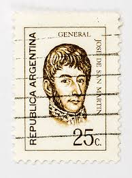 |
| vividagallery.com | Argentina General Manuel Belgrano 10 Centavos Brown Patriotic Portrait Definitive Postage Stamp Portable Battery Charger by Vivida Gallery - Vivida Gallery | 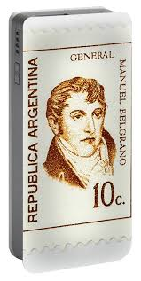 |
| Dreamstime.com | San Martin,general San Martin Andes Mountain Art,paint19th,argentina Editorial Image - Image of comics, poster: 271263360 | 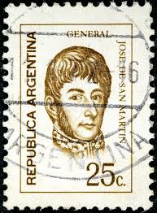 |
| eBay | ARGENTINA Pet 471 bl of 4 Parcialmente impreso al dorso - Back partly printed | eBay | 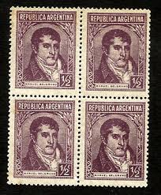 |
| HipStamp | Argentina 1967-Sc#839 Manuel Belgrano & Jose G. DE Artigas-Imperf:mnh S/S | Central & South America - Argentina, General Issue Stamp / HipStamp | |
| Todocolección | sellos de argentina, gral josé san martín, 5 y - Buy Antique stamps of Argentina on todocoleccion |  |
| eBay | Argentina 1862 Escuditos in Blocks of four ** Reproductions with gum ** | eBay | |
| Shutterstock | Argentina Circa 1971 Stamp Printed Argentina Stock Photo 103759127 | Shutterstock | |
| vividagallery.com | Argentina General Jose San Martin Portrait Independence Hero 100 Pesos Orange Red Postage Stamp Tote Bag by Vivida Gallery - Vivida Gallery | |
| Dreamstime.com | Postage Stamp Printed in Argentina Shows Jose Francisco De San Martin (1778-1850), Generals Serie, 25 C - Argentine Centavo, Circa Editorial Photo - Image of people, collection: 171330851 | |
| vividagallery.com | Argentina Jose San Martin Portrait 25 Centavos Brown Monochrome Engraved Definitive Postage Stamp Ornament by Vivida Gallery - Vivida Gallery |  |
| HipStamp | Argentina #418 1/2 cent Belgrano used VF | Central & South America - Argentina, General Issue Stamp / HipStamp | |
| Flickr | 040829-16-NOP | Antonio Rubiera | Flickr | |
| Colnect | Sello: General Manuel Belgrano (1770-1820) (Argentina(Famous Argentinians - Wmk round sun RA) Mi:AR 399X,Sn:AR 418,Yt:AR 363,Sg:AR 644,Gz :AR 486,Göt:AR 736 📮 |